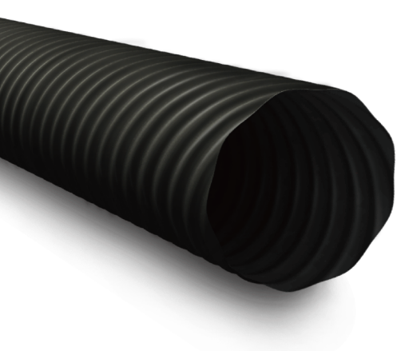
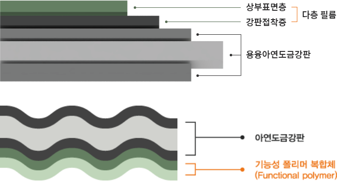

강판과 단단하게.
고주파 유도가열 공법으로 기능성 다층 필름을 강판에 밀착시킵니다.

0RS · 1RS · 3RS / NPE 피복 · SL 내부평활 파형강관
대한강관의 NPE 피복 기술부터 신한스틸파이프의 SL 내부평활관까지. 단면과 피복, 연결 방식을 함께 살펴보세요.
용도와 설계조건에 따라 파형을 선택합니다. 파형 구분과 피복·내부평활 여부는 각각 확인해야 합니다.

| 파형 | 피치 P | 깊이 H |
|---|---|---|
| 0RS | 38.0 mm | 6.5 mm |
| 1RS | 68.0 mm | 13.0 mm |
| 3RS | 76.2 mm | 25.4 mm |
소구경 배수·집수용부터 도로 횡단 배수시설까지, 관경·토피·하중과 수리조건에 맞춰 검토합니다.
일반 파형강관 기준 파형 치수입니다. 관경·두께와 내부평활형의 적용 범위는 제조사별 카탈로그를 확인하세요.
기능성 다층 필름을 강판에 밀착시킨
대한강관의 고밀착성 피복 기술.

고주파 유도가열 공법으로 기능성 다층 필름을 강판에 밀착시킵니다.
피복층의 내부식성·내화학성·내마모성을 고려해 사용 환경에 맞는 제품을 선택합니다.
고밀착 기능성 필름을 적용해 손상된 피복층의 보수성을 고려한 제품입니다.
내부 유체와 외부 토양 환경을 함께 검토해
내면피복형과 양면피복형을 선택합니다.
관 안쪽에 기능성 피복을 적용합니다.


관 안쪽과 바깥쪽 모두에 기능성 피복을 적용합니다.

대한강관 카탈로그에는 ‘손상된 피복층의 보수가 용이한 고밀착 기능성 필름이 적용된 피복 파형강관’의 NEP 인증 이력이 소개되어 있습니다.
SL 내부평활 파형강관은 외부 파형강판과 내부 평활강판을 결합한 이중 구조입니다.

외부 파형 구조로 하중에 대응하고, 내부 평활면으로 물의 흐름을 고려합니다. 신한스틸파이프의 SL(Sealed Lock-Seam) 기술은 락심 결합부에 수밀재를 적용하고 피복층과 결합하는 구조입니다.
관체의 락심부 실링과 현장 연결부의 가스켓·체결 상태를 함께 검토합니다.

카탈로그의 시험 성능은 해당 시료·조건에 대한 결과이며, 현장 설계조건과 적용 모델을 별도로 확인합니다.
파형·관경·재골 여부와 수밀 요구조건에 맞춰 연결구를 선택합니다.

재골 처리한 관 끝단 외주에 가스켓을 배치하고, 밴드를 볼트로 체결하는 방식입니다.

관 끝단의 플랜지와 중앙 연결부·수밀용 고무를 조립하고 체결하는 방식입니다.
카탈로그에는 슬리브를 관 끝단 안쪽에 넣고 열수축 테이프로 마감하는 연결 방식도 소개되어 있습니다.
관경·길이·파형·피복 구성과 연결구를 함께 확인해 주세요.
대한강관 카탈로그 6~15쪽, 신한스틸파이프 카탈로그 6~13쪽 및 대한강관 NPE 제품 소개를 참고했습니다. 인증 이력과 현재 인증 유효 여부는 구분합니다.
제품과 설계, 시공에 대해 편하게 문의해 주세요.